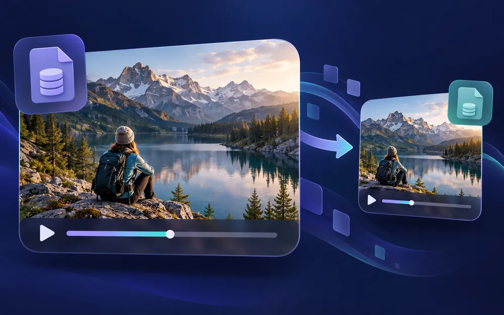
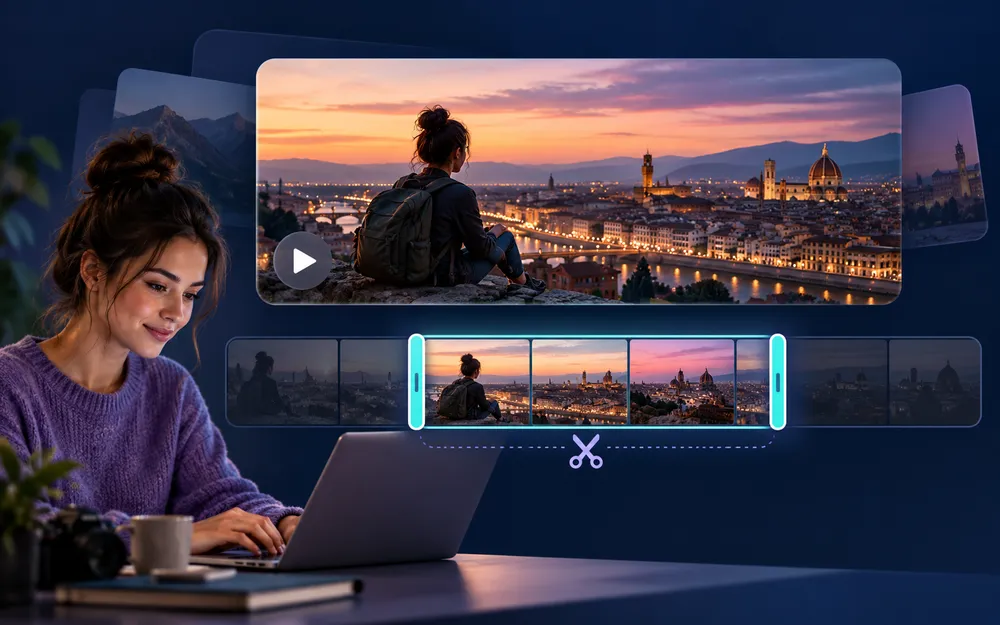
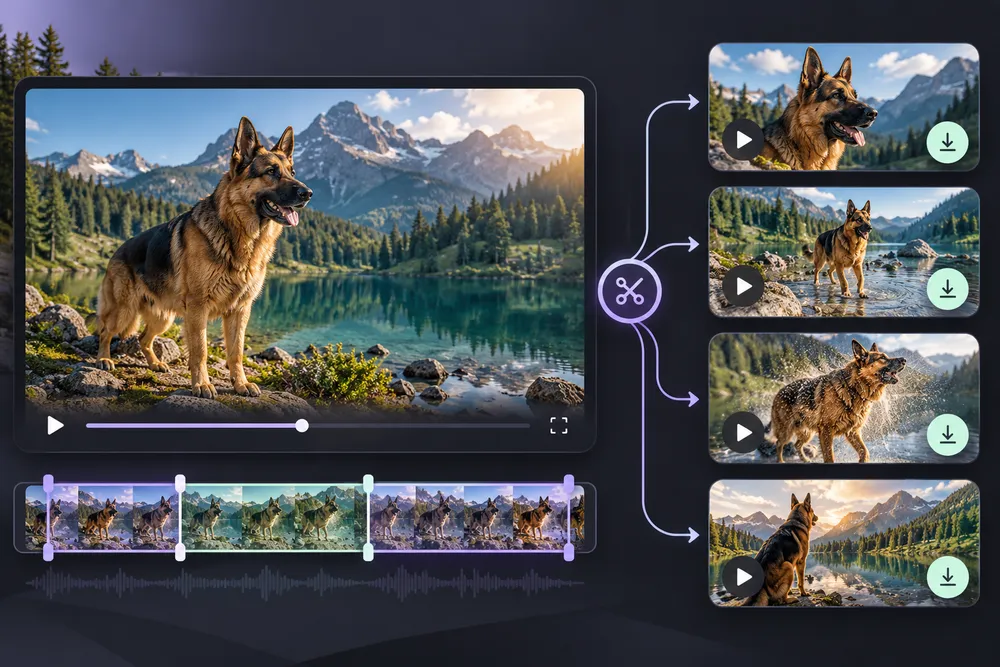
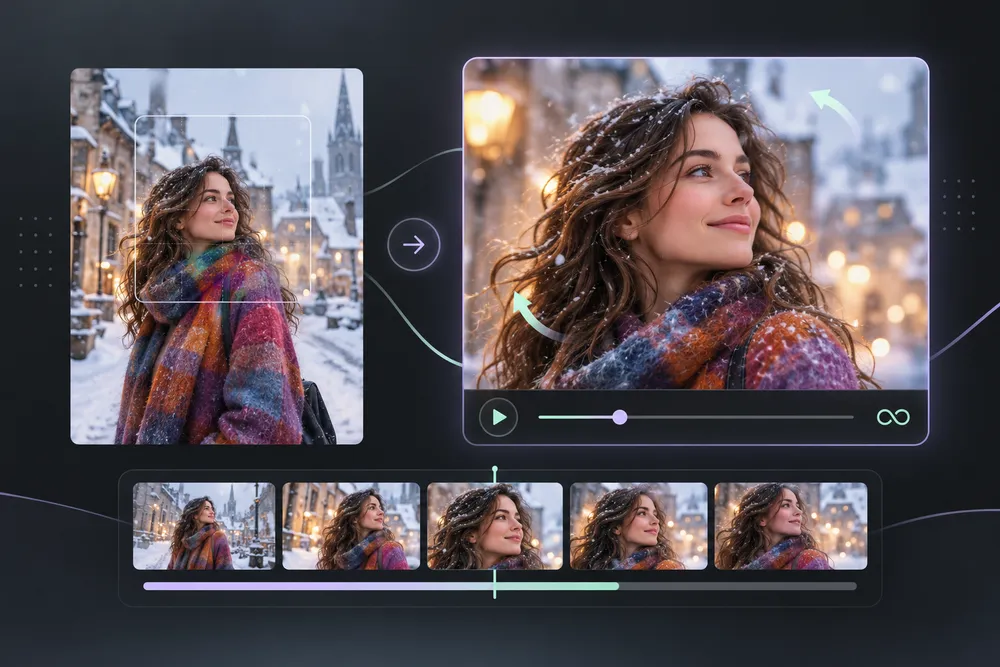
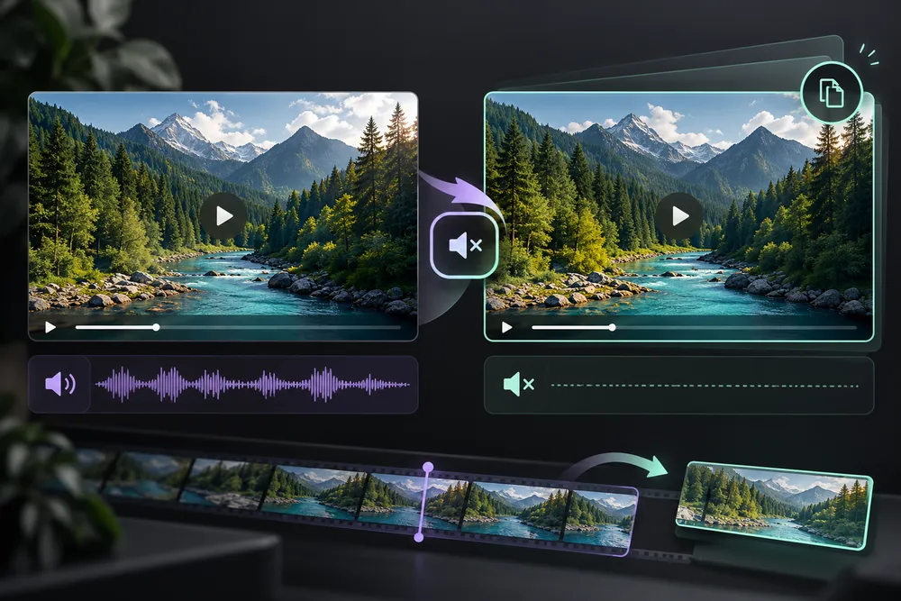
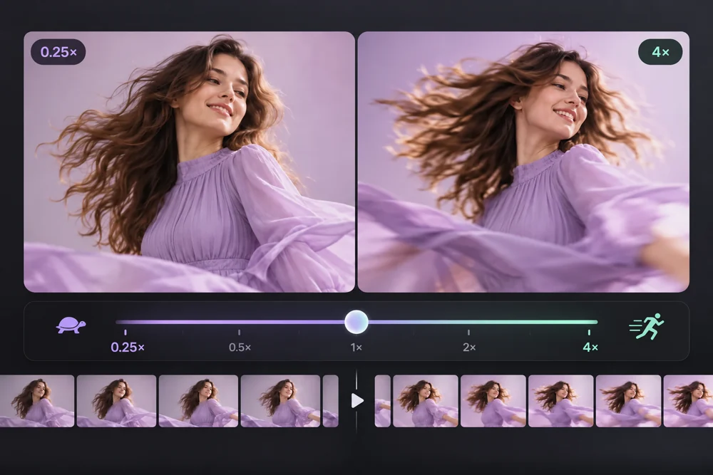

Video Utilities
Video UtilitiesVideo to GIF
Turn video clips into animated GIFs with custom settings.
On your deviceLOOX UTILITIES
Edit clips, trim footage, compress videos and prepare media for sharing with browser video utilities.
11 tools
Video UtilitiesTurn video clips into animated GIFs with custom settings.
On your device Audio Utilities
Audio UtilitiesExtract audio tracks from your video files.
On your device
Video UtilitiesCompress videos with adjustable resolution and quality.
On your device
Video UtilitiesCut a video by choosing exact start and end times.
On your deviceCut audio clips and export the selected section as WAV.
On your device Video Utilities
Video UtilitiesAdd a visible ownership mark with repeating text or your own logo, then keep a separate image or video copy.
On your device Video Editing
Video EditingEdit a multitrack timeline with keyframes, sound and effects.
On your device
Video UtilitiesSplit one video into several time ranges and download each MP4.
On your device
Video UtilitiesTurn a still image into a short looping pan-and-zoom GIF or MP4.
On your device
Video UtilitiesRemove the audio track and save a separate video copy.
On your device
Video UtilitiesCreate a slow-motion or fast-forward copy from 0.25× to 4× speed.
On your deviceNo tools match this search. Try a shorter phrase or explore another category.
Edit clips, trim footage, compress videos and prepare media for sharing with browser video utilities. Open a tool to see its supported formats and controls. Tools marked “On your device” process locally; cloud features require a connection and may require a LOOX account. Upcoming tools remain separate from the available collection.
Browse the complete LOOX toolkit